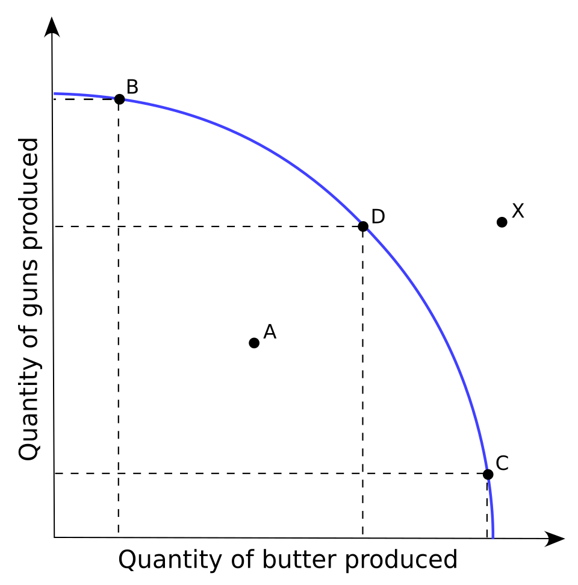
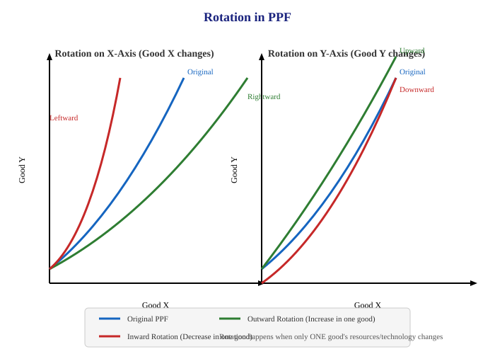

Introduction to Microeconomics
Short sentences. One idea at a time. Read one section. Do each check. Then continue.
Key Terms — Read These First
Learn these definitions first. Use them in every answer.
| Term | Definition |
|---|---|
| Economy | A system which provides people the means to work and earn a living |
| Scarcity | Limitation of supply in relation to demand for a commodity |
| Economic Problem | A problem of choice for satisfaction of unlimited wants from limited resources with alternative uses |
| Positive Economics | Study of things as they are — What is, What was, What will be |
| Normative Economics | Study of things as they ought to be — What should happen |
| Microeconomics | Study of behaviour of individual units of an economy — Price Theory |
| Macroeconomics | Study of behaviour of aggregates of the economy as a whole — Income and Employment Theory |
| Opportunity Cost | Cost of the next best alternative foregone |
| PPF | Graphical representation of possible combinations of two goods with given resources and technology |
| MOC / MRT | Units sacrificed to gain one additional unit of the other good |
| Ceteris Paribus | Keep all other factors constant; change only one factor |
mindmap
root((Chapter 1))
Economy
Work and earning
Production
Consumption
Investment
Scarcity
Unlimited wants
Limited resources
Alternative uses
Choice
What to produce
How to produce
For whom to produce
Tools
Positive - What is
Normative - What ought to be
Micro - Individual unit
Macro - Full economy
PPF
Downward slope
Concave shape
Shift - both goods
Rotation - one good
1. Economy
An economy is a system. It gives people the means to work. It gives people the means to earn a living.
Do these three processes in every economy:
- Production — Make goods and services.
- Consumption — Use goods and services.
- Investment — Keep resources for future production. Other name: Capital Formation.
CHECK — click to answer
Say the definition of economy in one sentence. Name the three processes: Production, Consumption, Investment.2. Scarcity
Scarcity is limitation of supply in relation to demand.
Study economics for one reason: scarcity.
Wants are unlimited. Resources are limited. This gap is scarcity.
Resources have alternative uses. Example: Use petrol in cars. Use petrol in airplanes. Use petrol in machines. One use stops another use.
Economics studies the way a society uses limited resources with alternative uses. It produces goods and services. It distributes goods and services among groups.
CHECK — click to answer
Give one example of scarcity: 100 people want cars, only 10 cars exist. Give one resource with two uses: petrol — cars and airplanes.3. Economic Problem
Economic Problem is a problem of choice. Satisfy unlimited wants from limited resources with alternative uses.
flowchart TD A[Unlimited Wants] --> D[Choice Is Necessary] B[Scarce Resources] --> D C[Alternative Uses] --> D D --> E[What to Produce] D --> F[How to Produce] D --> G[For Whom to Produce]
Three causes create the problem:
- Unlimited Human Wants — Wants never end. One want ends. A new want starts. Priorities differ.
- Scarcity of Resources — Land is limited. Labour is limited. Capital is limited. Demand is more than supply. Scarcity applies to all persons and all countries.
- Alternative Uses — One resource has many uses. Choice becomes necessary.
CHECK — click to answer
Write the three causes from memory: Unlimited wants, Scarce resources, Alternative uses.4. Positive Economics and Normative Economics
4.1 Positive Economics
Positive economics studies facts. It deals with things as they are. It asks What is. It asks What was. It asks What will be.
Rules for positive statements:
- Verify a statement with actual data.
- A statement can be true. A statement can be false.
- Give no value judgement. Stay neutral between ends.
- Give no suggestion. Describe the activity.
Examples: India is an overpopulated country. Prices are constantly rising. Minimum wage increase leads to higher unemployment among young workers. Rise in interest rates reduces consumer spending.
4.2 Normative Economics
Normative economics studies ideals. It deals with things as they ought to be. It asks What should happen.
Rules for normative statements:
- Do not verify a statement with data.
- Give a value judgement.
- Give a suggestion.
- Set an ideal.
Examples: India should control rising prices. Income inequalities should be reduced. Government should increase spending on healthcare. Taxes on the rich should increase to fund social programs.
| Basis | Positive | Normative |
|---|---|---|
| Meaning | Deals with how problems are actually solved | Deals with how problems should be solved |
| Verification | Verify with actual data | No verification with data |
| Purpose | Give real description | Set ideals |
| Nature | Based on facts; gives no suggestion | Based on opinion; gives suggestion |
| Value judgement | Gives none | Gives judgement |
CHECK — classify each sentence
Prices rise in India — Positive. Prices should not rise — Normative. Higher taxes on cigarettes reduce smoking — Positive. Taxes on cigarettes should increase — Normative.5. Microeconomics and Macroeconomics
Micro comes from Greek mikros. Mikros means small. Macro comes from Greek makros. Makros means large.
Adam Smith is the founder of the field of microeconomics.
Microeconomics: It studies behaviour of individual units of an economy. Examples: individual income, individual output, price of a commodity. Main tools: Demand and Supply.
Macroeconomics: It studies behaviour of aggregates of the economy as a whole. Examples: national income, aggregate output, aggregate consumption. Main tools: Aggregate Demand and Aggregate Supply.
| Basis | Microeconomics | Macroeconomics |
|---|---|---|
| Meaning | Studies individual units | Studies aggregates of full economy |
| Tools | Demand and Supply | Aggregate Demand and Aggregate Supply |
| Objective | Determine price of commodity or factor | Determine income and employment level |
| Aggregation | Limited degree — market demand from individual demands | Highest degree — aggregate demand for full economy |
| Assumption | Keep macro variables constant | Keep micro variables constant |
| Other name | Price Theory | Income and Employment Theory |
CHECK — click to answer
Tools of micro: Demand and Supply. Tools of macro: Aggregate Demand and Aggregate Supply. Other names: Price Theory, Income and Employment Theory.6. Central Problems of an Economy
Allocation of resources creates three central problems. Assign scarce resources to fulfil maximum wants.
flowchart LR R[Scarce Resources] --> W[WHAT to Produce - Goods and Quantity] R --> H[HOW to Produce - Technique] R --> F[FOR WHOM to Produce - Distribution]
6.1 What to Produce
Select goods for production. Select quantity for each good.
- Decide the commodities. Example: consumer goods such as rice and clothes. Capital goods such as machines. Civil goods such as bread. War goods such as guns.
- Decide the quantity. Example: More sugar means less of other goods. More war goods means less civil goods.
6.2 How to Produce
Select the technique for production. Technique means combination of inputs.
| Technique | Meaning | Use |
|---|---|---|
| LIT — Labour Intensive | Use more labour, use less capital | India — labour is abundant |
| CIT — Capital Intensive | Use more capital, use less labour | USA and England — capital is abundant |
Select the technique to raise living standards. Provide employment to all.
6.3 For Whom to Produce
Distribute produced goods among individuals. Production gives factor income. Income types: rent, wages, interest, profit.
- Personal Distribution — Distribute national income among groups of people.
- Functional Distribution — Decide share of each factor in total national product.
CHECK — click to answer
Name the three problems: What, How, For Whom. LIT uses more labour. CIT uses more machines.7. Opportunity Cost
Opportunity Cost is the cost of the next best alternative foregone.
Use resources in one project. Lose output from another project. That loss is the cost.
Example 1: Work in a bank at 40000 per month. Get offer as executive at 30000. Get offer as journalist at 35000. Opportunity cost of bank job is 35000. 35000 is the next best alternative.
Example 2: Have 40000. Buy a laptop. Or buy an LED TV. Buy the laptop. Lose satisfaction from the TV. That loss is the opportunity cost.
CHECK — click to answer
You choose option A. You leave option B. The opportunity cost is the value of option B.8. Production Possibility Frontier (PPF)
PPF shows possible combinations of two goods. Produce these combinations with given resources and technology.
Use only two goods for simplicity. Apply the same method to any goods.
Other names for PPF — use any name in exams
| No. | Name |
|---|---|
| 1 | Production Possibility Curve (PPC) |
| 2 | Production Possibility Boundary |
| 3 | Transformation Curve |
| 4 | Transformation Boundary |
| 5 | Transformation Frontier |
Assumptions of PPF — follow five rules
- Resources are fixed. Transfer resources from one use to another.
- Produce only two goods.
- Use resources fully and efficiently. Allow no waste.
- Resources are not equally efficient in all goods. Productivity falls after transfer.
- Technology stays constant.

PPF Schedule — Guns and Butter
| Possibility | Guns | Butter | Guns Sacrificed | Butter Gained | MRT |
|---|---|---|---|---|---|
| A | 21 | 0 | — | — | — |
| B | 20 | 1 | 1 | 1 | 1 |
| C | 18 | 2 | 2 | 1 | 2 |
| D | 15 | 3 | 3 | 1 | 3 |
| E | 11 | 4 | 4 | 1 | 4 |
| F | 6 | 5 | 5 | 1 | 5 |
| G | 0 | 6 | 6 | 1 | 6 |
Read the schedule: At point A, make 21 guns and 0 butter. At point G, make 0 guns and 6 butter. Join points A to G. Get curve AG. AG shows maximum production limit.
MOC and MRT
MOC: Number of units sacrificed to gain one additional unit of another good. MRT = Units Sacrificed / Units Gained.
MRT = Units Sacrificed
───────────────────
Units Gained
Example: Move from B to C. Sacrifice 2 guns. Gain 1 butter. MRT = 2 / 1 = 2.
MRT increases from 1 to 6. Reason: Shift workers from guns to butter. Workers suit guns best. Workers suit butter less. Productivity falls. Cost rises.
Shape of PPF
Rule 1 — PPF slopes downwards. More of one good needs less of the other good. Relation is inverse.
Rule 2 — PPF is concave to the origin. MRT increases. Sacrifice more units for each additional unit.
| PPF Shape | MRT |
|---|---|
| Concave to origin | Increasing MRT |
| Convex to origin | Decreasing MRT |
| Straight line | Constant MRT — all resources are equally efficient |
flowchart LR A[Increasing MRT] --> B[Concave PPF] C[Decreasing MRT] --> D[Convex PPF] E[Constant MRT] --> F[Straight-line PPF]
Attainable and Unattainable Combinations

| Location | Status | Meaning |
|---|---|---|
| ON the PPF | Attainable and efficient | Use resources fully — optimum utilisation |
| INSIDE the PPF | Attainable but inefficient | Waste resources — underutilisation, unemployment |
| OUTSIDE the PPF | Unattainable | No capacity with present resources and technology |
Shift and Rotation in PPF


Shift — change in both goods
- Rightward shift: Technology improves for both goods. Resources grow for both goods. Produce more of both goods.
- Leftward shift: Technology degrades for both goods. Resources fall for both goods. Produce less of both goods.
Growth of resources means: quantity rises — find new natural resources, receive foreign capital, increase labour force. Quality rises — develop skills through education, improve hygiene through Clean India Mission.
Fall of resources means: earthquake destroys resources, flood destroys capacity, outdated technology lowers output, pandemic lowers capacity.
Rotation — change in one good only
- Better technology for Good X — PPF rotates right on X-axis.
- Weaker technology for Good X — PPF rotates left on X-axis.
- Better technology for Good Y — PPF rotates up on Y-axis.
- Weaker technology for Good Y — PPF rotates down on Y-axis.
| Change | Movement |
|---|---|
| Both goods improve | Shift right |
| Both goods decline | Shift left |
| Only one good improves | Rotate out on that axis |
| Only one good declines | Rotate in on that axis |
flowchart TD Q[What changed?] --> S[SHIFT - Full curve moves] Q --> R[ROTATION - One side moves] S --> SR[Right = Growth] S --> SL[Left = Decline]
CHECK — draw and label
Draw PPF with points A to G. Mark one point inside. Mark one point outside. Label efficient and unattainable.9. Fast Revision — One Page
- Economy gives work and earning. Do production, consumption, investment.
- Scarcity means limited supply against demand.
- Economic Problem means choice with unlimited wants and alternative uses.
- Positive states facts. Verify with data. Normative states ideals. No verification.
- Micro studies individual units. Macro studies full economy.
- Ask What, How, For Whom. Use LIT or CIT. Distribute income as rent, wages, interest, profit.
- Opportunity Cost is next best alternative foregone.
- PPF shows two-good combinations. Follow five assumptions.
- MRT = Sacrificed / Gained. Values: 1, 2, 3, 4, 5, 6.
- PPF slopes down. Concave shape means increasing MRT.
- ON means efficient. INSIDE means inefficient. OUTSIDE means unattainable.
- Both goods change = Shift. One good changes = Rotation.
10. Exam Questions With Answers
Self-Check Quiz
Answer each question. Click Show answer to verify. Score: count each correct answer.